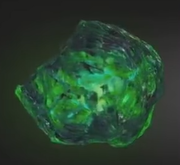
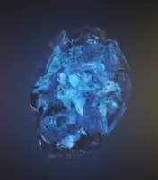
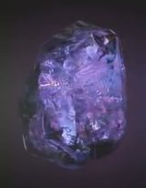
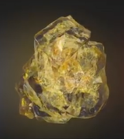
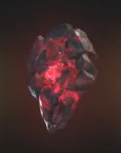
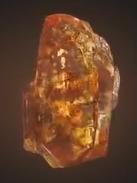

| Название | Цвет | Информация | Изображение |
| Камень времени | Зелений | Глаз Агамотто - древний артефакт, подвеска, созданная Агамотто, первым верховным чародеем, предположительно для содержания и управления силой камня времени, находящегося внутри. |  |
| Камень пространства | Синий | Тессеракт назван так из-за своей кубической формы. Он способен предоставить доступ к любой точке во вселенной, если его использовать правильно. Уникальный элемент, из которого состоит тессеракт, был использован людьми для того, чтобы создать продвинутое вооружение. |  |
| Камень силы | Фиолетовий | Камень силы (англ. Power Stone) - один из шести камней бесконечности, остаток из сингулярности, которая старше Вселенной и представляет она себя тканью Силы. |  |
| Камень разума | Жёлтый | Скипетр был оружием, которое использовало жёлтый камень разума, хранящийся в синем компьютерном модуле, который также скрывал присутствие камня |  |
| Камень реальности | Крастный | В отличии от всех, ранее встреченных камней бесконечности, у которых содержащие ячейки - твёрдые, эфир выглядит как тёмная, красная и вязкая жидкость. |  |
| Камень души | Ораньжевый | Мало что известно о Камне души. Однако, согласно древним текстам Вонга, камень души может оказаться самой большой угрозой из всех камней бесконечности |  |